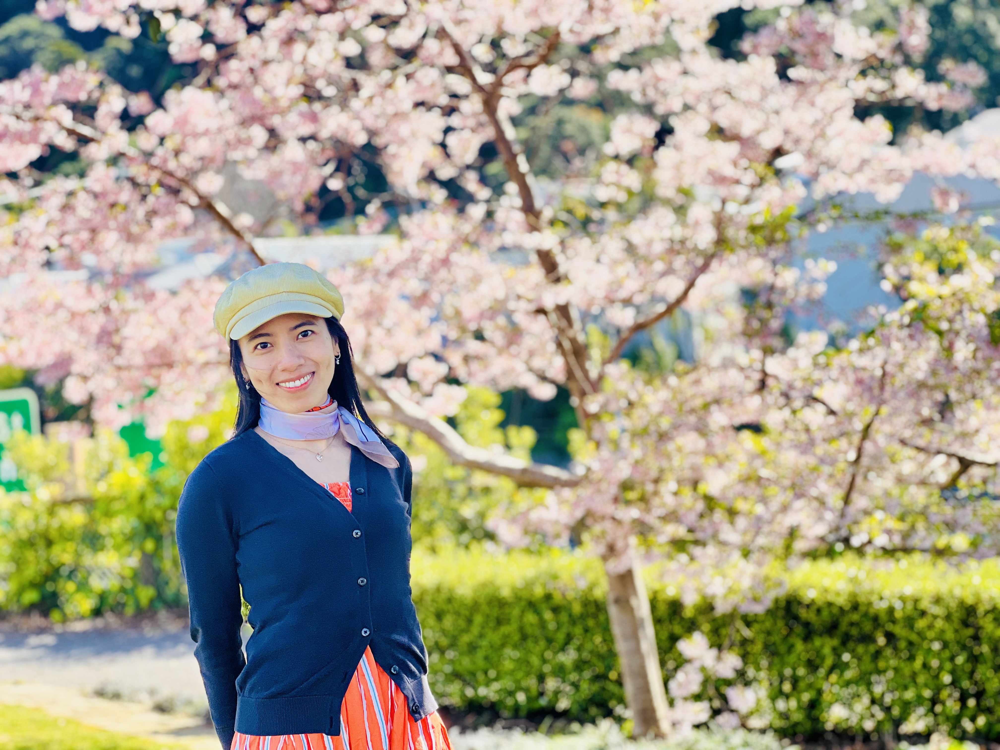

Curious Enough to Begin
Before starting my PhD, I thought I had a fairly clear idea of what it would be like.
I knew it would be challenging, full of uncertainty, and probably involve many moments of wondering whether I actually knew what I was doing. 😅
But more than being worried, I was curious and excited.
I was excited about the things I did not know yet.
I wondered what new ideas I would discover, what places I would explore, and what kind of people I would meet along the way.
Moving abroad made that curiosity even stronger. I was not simply starting a PhD; I was also beginning a new life in a country with a culture very different from the one I grew up in.
And then I arrived in New Zealand and realised that I was not adapting to just one new culture.
New Zealand is wonderfully multicultural, so I found myself learning from many different cultures, perspectives, and ways of seeing the world. 🌏
Then, of course, there is the actual PhD.
Read papers. Find a research question. Collect data. Run regressions. Write papers. Present them. Revise them.
Sounds quite straightforward.
That was before I discovered that a regression can look absolutely beautiful one evening and, after adding one control variable the next morning, suddenly behave as if it has never met you before. 🤔
As my PhD journey has unfolded, I have realised that the research appearing in my thesis is only part of what I am learning.
Some lessons come from papers and supervisors. Of course, my supervisors are wonderful and have been an incredibly important part of my research journey — guiding me through difficult questions, challenging my thinking, and helping me find my way whenever the research becomes uncertain.
Others come from conversations, unexpected experiences, mistakes — and from the people I meet along the way.
As someone who is quite low-tech, I feel especially fortunate to have people around me from whom I can learn new things — especially new tools that are incredibly useful for doing research. They may seem like small things, but they have made my PhD life so much easier, particularly because these are not always the kinds of things I can ask my supervisors about.
In Vietnamese, we have a saying: “Học thầy không tày học bạn” — sometimes, we learn just as much from our peers as we do from our teachers. Perhaps it fits perfectly here.
I have also discovered a rather amusing little secret: one way to work more effectively if you are not exceptionally smart (it's me 🤫) is simply to stay close to smart people, observe how they work, and just copy them. 🙃 🤭
And I believe that if you dare to ask — even what might seem like the silliest question — there will always be someone willing to answer. All you need is the ability to temporarily forget what embarrassment feels like. 🤭
I have no better words for it than simply: I am genuinely grateful.
🎧 This says it better than I can →
I still do not know exactly where this journey will take me.
And I definitely do not know what my next regression will decide to do next Monday.
The only thing I know for sure is that, throughout this journey, I have been growing into a better version of myself — and I absolutely love this version of me. 😊🌱
Maybe not knowing is part of what makes the journey interesting.
